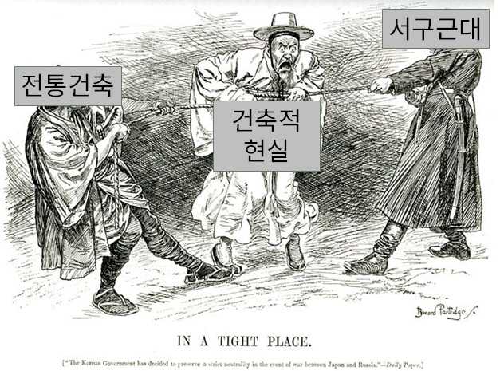

우리가 알고 있다고 생각했던 것들
혼종의 정면은 소위 ‘빌라’로 통칭되는 지난 세기의 다세대·다가구주택을 재료의 층위에서 회고하려는 시도이다. 지극히 혼돈스러운 지금 우리의 도시 경관을 구성하고 있는, 그 근원을 파악하기 어려운 건축재료들의 혼성적 사용 행태와 생산과정에 대해 추적한다.
다세대·다가구주택의 무저자성은 지독하다. 형식에 저자가 없음은 물론이고 1980년대 후반 추진된 ‘주택 200만호 건설계획’의 일환으로 공급만을 염두에 두고 투자자, 설계자, 시공자, 생산자, 사용자 모두 핵심을 의도 없이 비켜가며 회색 지대에 놓은 일련의 과정의 결과물이다. 그러나 회색지대에서 발견되는 모습들이야말로 한 개인의 계획에 의해 의도되지 않은, 20세기 후반 이후 한국인의 실제 정주 환경을 담은 자료로서 의미가 있다고 판단하였다. 이들 주택에는 뚜렷한 저자가 존재하지 않지만, 달리 말하면 사회 전체가 저자였던 셈이다.
한편, 이처럼 작가 없이 놓였던 그 나름의 의미를 간직하고 있는 다세대·다가구주택들은 사라져가는 중이다. ‘빌라’는 더 이상 선호되는 주거 형태가 아니며, 대중들의 높아진 눈높이는 여러 가지 측면에서 편리한 신축 아파트 또는 다른 모습의 방식을 요구한다. 이에 따라 다세대·다가구주택에 주로 사용되던 벽돌, 기와, 대문 등의 건축재료 생산 업체 및 공장들도 사라져가고 있는 형편이다. 이들에 대한 구체적인 도면자료나 기록은 거의 남겨진 바 없다.
이에 우리는 지금 소멸 중인 빌라의 재료와 그 생산자를 조명하며 다세대·다가구주택의 모습을 기록한다. 한국 대도시 내 주거지역의 보편적 풍경을 돌이켜 생각하며, 그것을 이루는 기본적인 개별 요소에 주목하여 각각의 재료들이 어떻게 생겨나고 구성되었는지 밝히고자 한다.
가장 중요한 것은 왜 이러한 것들이 나타나고 번성했으며 다른 것들은 밀려났는가 하는 질문이다.
 01
01
서울 역사박물관에 전시되어 있는 1968년에 제작된 콘크리트 광화문 덩어리이다. 당시에는 콘크리트로 전통건축을 모방하는 것을 첨단기술로 받아들이고 제작되었으나, 시대의 변화와 함께 비판을 받으며 사라졌다.
 02
02
The Tree of Architecture는 건축사를 하나의 계보로 정리한다. 서구 건축과 달리, 아시아 건축은 하나의 독립된 흐름으로 다뤄지지 못한 채 ‘Vernacular’ 혹은 장식적 주변부로 축약된다. 문제는 이러한 위계가 단지 서구의 시선에 머물지 않았다는 점이다. 한국 역시 근대화 과정 속에서 이 역사관을 적극적으로 내면화했다.
 03
03
1964년 MoMA의 ‘건축가 없는 건축’ 전시는 모더니즘이 맹위를 떨치던 시절에는 외면 받던 다양한 문화권의 토속건축을 조명한 첫 시도였다. 전시의 기획을 맡은 버나드 루도프스키는 익명의 설계자에 의해 생겨난 세계 각지의 자연발생적이고 평범한 형태들을 진지한 건축적 논의의 대상으로 격상시켰다. 그에 따르면 이러한 토속건축들은 인간의 삶이 지역의 조건에 적응하는 과정에서 생겨난 집단지성의 결과물이다.

04
한국의 건축담론은 서양건축의 계보를 수용하면서 건축 담론의 이분화를 만들었다. 전통은 지키고 보존해야 할 과거의 가치로 고정되고, 현대는 서구적 기술과 미학을 향한 동시대적 실천으로 간주되며 자연스럽게 그 사이의 시도들은 조명 받지 못했다.